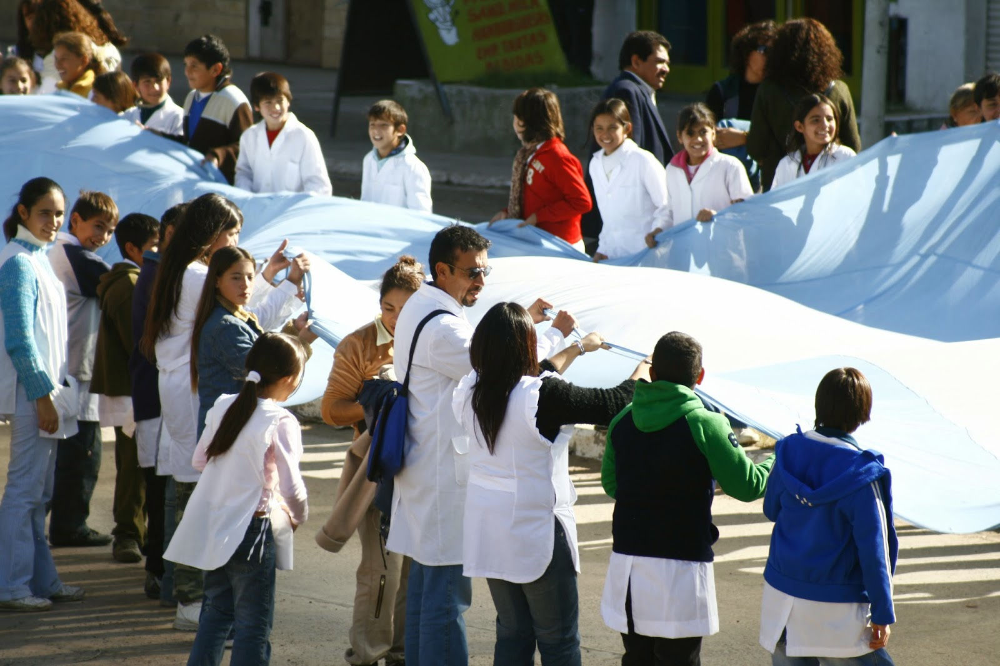

Sociedad de Fomento del Video Alternativo

Sofovial puede definirse como un colectivo de trabajo comunicacional solidario que generó en la región un tipo de prácticas y organización articuladoras de experiencias y saberes habitualmente distantes, una creativa relación entre el Video Proceso, la Educación Popular y la Estrategia de APS (Atención Primaria de la Salud). Desde tal conjunción acompaña desde 1989 el que hacer cotidiano de muchísimas instituciones y organizaciones sociales, aportando producciones y capacitación tanto en el campo de la Salud como en los alcances políticos/estratégicos de la Comunicación Alternativa.